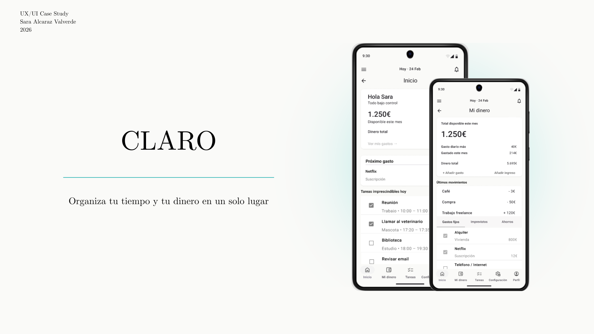
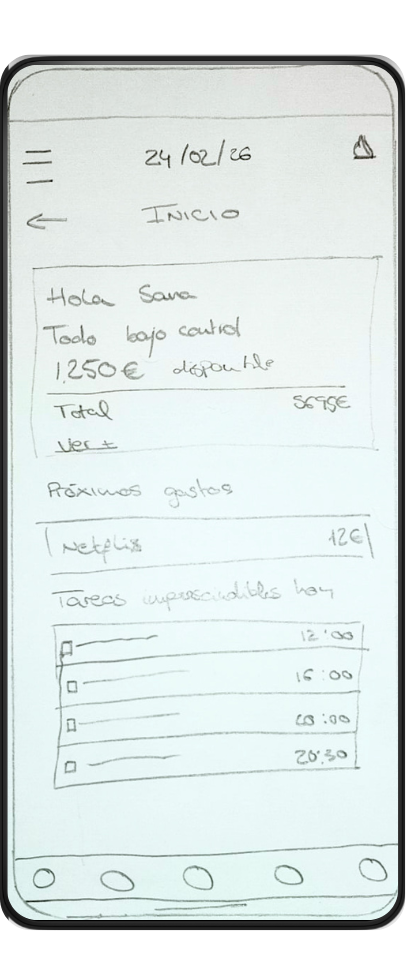
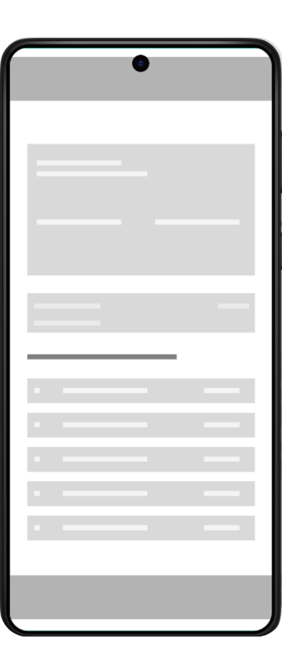
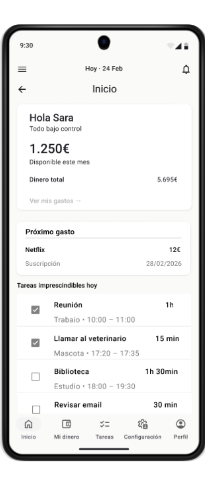
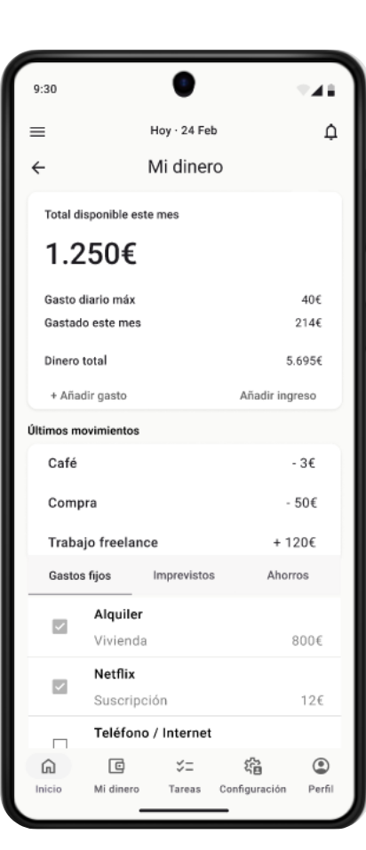
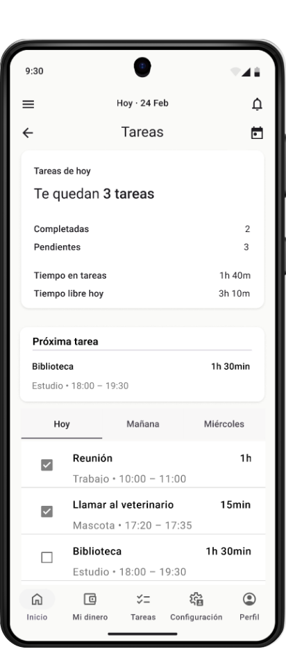
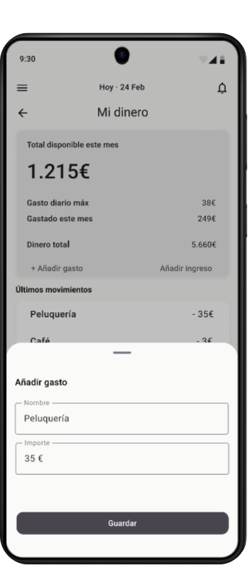

UX/UI Case Study
Proyecto académico · 2026
CLARO
Organiza tu tiempo y tu dinero en un solo lugar
Aplicación móvil diseñada para ayudar a las personas a comprender y gestionar su tiempo y su dinero en un mismo lugar, a través de una interfaz clara, visual y fácil de usar.
UX/UI Design
App móvil
Proyecto académico
2026
Rol
UX/UI Designer
Duración
14 semanas
Herramientas
Figma, Canva
Tipo
App móvil conceptual
01 · Contexto
El punto de partida
Muchas aplicaciones actuales se centran exclusivamente en la gestión de tareas o en el control de gastos, pero pocas integran ambas áreas. Sin embargo, el tiempo y el dinero están estrechamente relacionados en la vida diaria de las personas. CLARO surge como una propuesta que busca unificar estas dos dimensiones, permitiendo al usuario visualizar de forma sencilla cómo organiza su tiempo y cómo distribuye su dinero.
02 · Problema
Qué estaba fallando
Para muchas personas, controlar los gastos diarios o mantener una organización clara de las tareas puede resultar complicado si las aplicaciones son demasiado complejas o requieren demasiados pasos para registrar información.
03 · Oportunidad
Qué podía aportar CLARO
Diseñar una experiencia que una dos áreas clave de la vida cotidiana: la organización del tiempo y la organización del dinero, dentro de una misma lógica visual, clara y sencilla.
04 · Objetivo
Qué debía resolver
Diseñar una aplicación que permita registrar gastos de forma rápida, visualizar el dinero disponible de manera clara y organizar tareas del día a día, integrando la gestión del tiempo y el dinero en una misma interfaz.
05 · Solución
La propuesta
CLARO propone una interfaz basada en tarjetas de información que permiten visualizar rápidamente el estado del dinero y de las tareas. La aplicación integra dos secciones principales: gestión de gastos y gestión del tiempo.
06 · Arquitectura
Arquitectura de la información
La aplicación se organiza en cinco secciones principales accesibles desde la navegación inferior. Esta estructura permite comprender rápidamente el producto y acceder de forma clara a las funciones más importantes.
Inicio
Dinero
Tareas
Configuración
Perfil
07 · Flujo principal
Happy path: registrar un gasto
Uno de los flujos principales de CLARO es el registro de un gasto. Este recorrido se diseñó para reducir la fricción y permitir que el usuario complete la acción en pocos pasos, de forma clara, rápida y comprensible.
El objetivo es que registrar un gasto no interrumpa la experiencia, sino que se integre de manera natural dentro de la sección de dinero.
Happy path
Paso 1
→
Inicio
Paso 2
→
Mi dinero
Paso 3
→
Añadir gasto
Paso 4
→
Completar datos
Paso 5
Confirmación
El resultado final permite registrar un gasto rápidamente y entender de forma inmediata cómo afecta al dinero disponible del mes.
08 · Proceso visual
Evolución de wireframes
El proceso de diseño comenzó con bocetos de baja fidelidad realizados a mano, que permitieron explorar rápidamente la estructura de las pantallas principales y la organización general de la interfaz.
A partir de esas primeras exploraciones, se desarrollaron wireframes digitales para definir con mayor precisión la jerarquía visual, la disposición de los componentes y la lógica de navegación. Finalmente, este proceso dio lugar a un prototipo de fidelidad media, donde la estructura comenzó a sentirse más cercana a la experiencia final de la aplicación.
Este recorrido permitió iterar la interfaz de forma progresiva, validando primero la estructura y después el comportamiento visual de las pantallas.
Proceso visual

Boceto a mano

Wireframe digital

Media fidelidad
La transición de baja fidelidad a media fidelidad permitió refinar la estructura, mejorar la jerarquía visual y acercar la propuesta a una interfaz funcional y coherente con el sistema de diseño de la app.
09 · Sistema de diseño
Base visual y consistencia
Para el prototipo de fidelidad media se utilizaron componentes basados en las guías de Material Design, lo que permite mantener una interfaz consistente, clara y fácil de usar en dispositivos Android.
En el diseño se priorizó el contenido sobre el contenedor, utilizando patrones de navegación como pestañas reutilizables y componentes estándar como tarjetas de información, lo que facilita la interacción y reduce la complejidad y el número de pasos necesarios para completar una acción.
Además, la interfaz se estructuró mediante componentes reutilizables siguiendo una lógica similar al Atomic Design, combinando elementos simples como botones, inputs e iconos para construir componentes más complejos como formularios o tarjetas.
Grid
4 columnas · márgenes de 16px · gutter de 8px
Patrones
Bottom Navigation · Tabs · Cards · Bottom Sheet · Snackbar
Tipografía
Jerarquía clara entre títulos, datos principales y texto secundario
Espaciado
Sistema basado en múltiplos de 8 para mantener consistencia visual
10 · Componentes
Componentes principales
Cards de resumen
Utilizadas para mostrar de forma rápida el dinero disponible, el estado del día y el resumen de tareas.
Tabs
Permiten organizar subsecciones como gastos fijos, imprevistos y ahorros, o la vista por días en tareas.
Bottom Navigation
Facilita el acceso a las principales áreas de la aplicación de forma clara y constante.
Bottom Sheet
Utilizado para registrar gastos e ingresos sin sacar al usuario del contexto principal.
Formularios
Diseñados para reducir la fricción y permitir registrar acciones en pocos pasos.
Snackbar
Proporciona feedback visual de confirmación sin interrumpir la experiencia del usuario.
11 · Interfaz
Diseño de interfaz
El diseño de la interfaz se centró en simplificar la gestión del dinero y del tiempo mediante una estructura clara y fácil de entender. Las tarjetas de información permiten visualizar rápidamente datos importantes como el dinero disponible o el estado de las tareas del día.
Los formularios simples facilitan el registro de gastos, reduciendo pasos innecesarios en la interacción y manteniendo un lenguaje visual consistente en todas las secciones de la app.



12 · Interacciones
Prototipo navegable
Se desarrolló un prototipo funcional en Figma que permite simular el flujo principal de la aplicación, incluyendo navegación entre secciones, registro de gastos, edición y eliminación de movimientos y mensajes de confirmación mediante Snackbar.
13 · Evaluación
Evaluación heurística
El diseño fue evaluado utilizando los principios heurísticos de Nielsen, analizando aspectos como la visibilidad del estado del sistema, la consistencia de la interfaz, la prevención de errores y la ayuda al usuario. Este análisis permitió comprobar que la interfaz mantiene una estructura clara, utiliza patrones reconocibles y proporciona feedback visual adecuado para las acciones principales.
14 · Futuras mejoras
Próximos pasos
Pruebas con usuarios
Realizar test de usabilidad con usuarios reales para detectar posibles mejoras en la navegación y comprensión de la interfaz.
Relación tiempo-dinero
Explorar nuevas formas de visualizar la relación entre el tiempo disponible y los gastos del usuario.
Recordatorios inteligentes
Incorporar un sistema de notificaciones para tareas importantes y control del gasto diario.
Estadísticas
Añadir gráficos que permitan analizar hábitos de tiempo y dinero a lo largo del tiempo.
15 · Conclusión
Cierre del proyecto
CLARO demuestra cómo una interfaz clara y simplificada puede ayudar a los usuarios a comprender mejor la relación entre su tiempo y su dinero. A través de un sistema de tarjetas informativas y una navegación sencilla, la aplicación facilita el registro de gastos y la organización de tareas en un mismo entorno.
Prototipo interactivo
Ver prototipo completo en Figma
El prototipo permite recorrer las pantallas principales, navegar entre secciones y visualizar el flujo de registro de gastos dentro de la app.